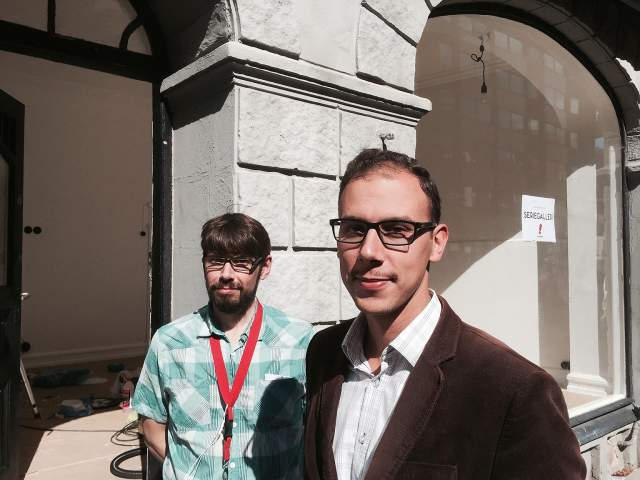
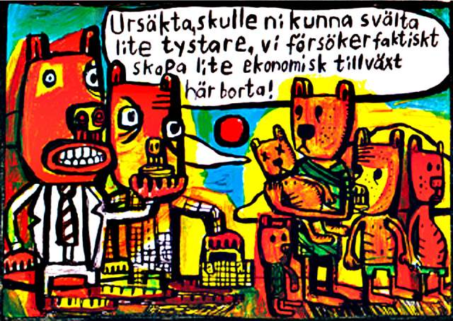

"Malmö får sitt första seriegalleri"
Om några veckor öppnar Malmös första riktiga seriegalleri. Seriefrämjandet håller nu på att renovera en lokal på Friisgatan och den 18 september smygöppnar galleriet med en Sara Granér-utställning.
Den 157 kvadratmeter stora lokal på Friisgatan där klädbutiken Miloii tidigare höll till håller nu på att målas för att skapa ett kombinerat seriegalleri och seriebutik. – Vi har gjort mer och mer utställningsverksamhet sedan vi startade Seriecenter 2005, men allt har varit vandringsutställningar och vi har velat ha en fast plats dit man kan gå och se serieutställningar, säger Seriefrämjandets verksamhetsledare Jamil Mani.

Och nu har de hittat en sådan plats bara ett stenkast bort från Stadsarkivet där Svenskt seriearkiv har 300-400 hyllmeter med arkiverade serier. Och ett ännu kortare stenkast från Kulturhuset Mazetti där Seriecenter, Seriefrämjandet och Serieskolan finns.
Den 18 september smygöppnar det ännu namnlösa galleriet med en utställning av en av Malmös mest hyllade serieskapare: Sara Granér.
Hon släpper senare i höst sitt nästa album, ”Vården i livets slutskede”, och utställningen kommer att innehålla serier från den och från tidigare verk.

Serie av Sara Granér.
Sen väntar en utställning i oktober med barnseriefestivalen ”I seriernas värld” och då kommer den riktiga invigningen att äga rum. I november har de ”ett stort internationellt namn” planerat, men allt är inte klart än.
Utställningarna ska ske i den del av lokalen som tidigare var butik, medan den delen som tidigare var en frisör ska göras om till seriebutik. Det blir tre utställningsrum och tanken är att den mittersta av dem ska ägnas åt en permanent seriehistorisk utställning.
– Tanken är att vi ska ha mellan 6–10 utställningar om året och tanken är ju att synliggöra seriestaden Malmö i dessa. Det är inte omöjligt att serieskolans examensutställning hamnar här, säger Jaml Mani.
I seriebutiken kommer Seriefrämjandets egna utgivning, serietidningar, serieböcker och fanzines att finnas till salu.
– Går man in i en svensk bokhandel är poesi och serier de mest marginaliserade genrerna. I Sverige ges det ut mellan 200–300 serieböcker om året. Ungefär 100 av dem är svenska originalserier. Den inhemska produktionen har ökat enormt, men det ser man inte i bokhandeln, säger Jamil Mani.
Dessutom finns idag 250 000 olästa serietidningar nere i Svenskt seriearkiv och dubletterna därifrån ska säljas i butiken.
Tanken är att hålla öppet 5–6 dagar i veckan och även ha kvällsarrangemang.
– Eventuellt ska vi ha workshops, författarsamtal och signeringar i lokalen, säger Jamil Mani.
Men namnet på galleriet är alltså ännu inte klart. Det mest givna, Seriegalleriet, finns redan i Stockholm så det är otänkbart. Så om någon läsare har ett förslag så kan ni ju kommentera här nedan …